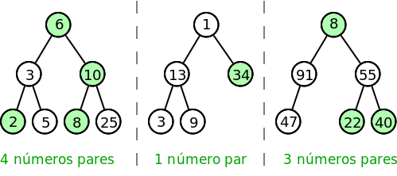

Pode assumir que o Mooshak terá acesso às classes descritas no enunciado do exercício 2 da aula prática.
public static int countEven(BTree<Integer> t) da
classe ED211
Deve devolver a quantidade de números pares que são elementos da árvore. Pode assumir que todos os valores são inteiros positivos.
A figura seguinte ilustra três diferentes árvores e a respectiva quantidade de números pares.

Os exemplos correspondem às árvores da figura do enunciado.
| Árvore t (em preorder com N a ser uma subárvore nula) |
countEven(t) |
|---|---|
| 6 3 2 N N 5 N N 10 8 N N 25 N N | 4 |
| 1 13 3 N N 9 N N 34 N N | 1 |
| 8 91 47 N N N 55 22 N N 40 N N | 3 |
Conteúdo de Fernando Silva (DCC/FCUP), migrado de dcc.fc.up.pt/~fds/aulas/EDados/2526/praticas/problems/prob211.html.